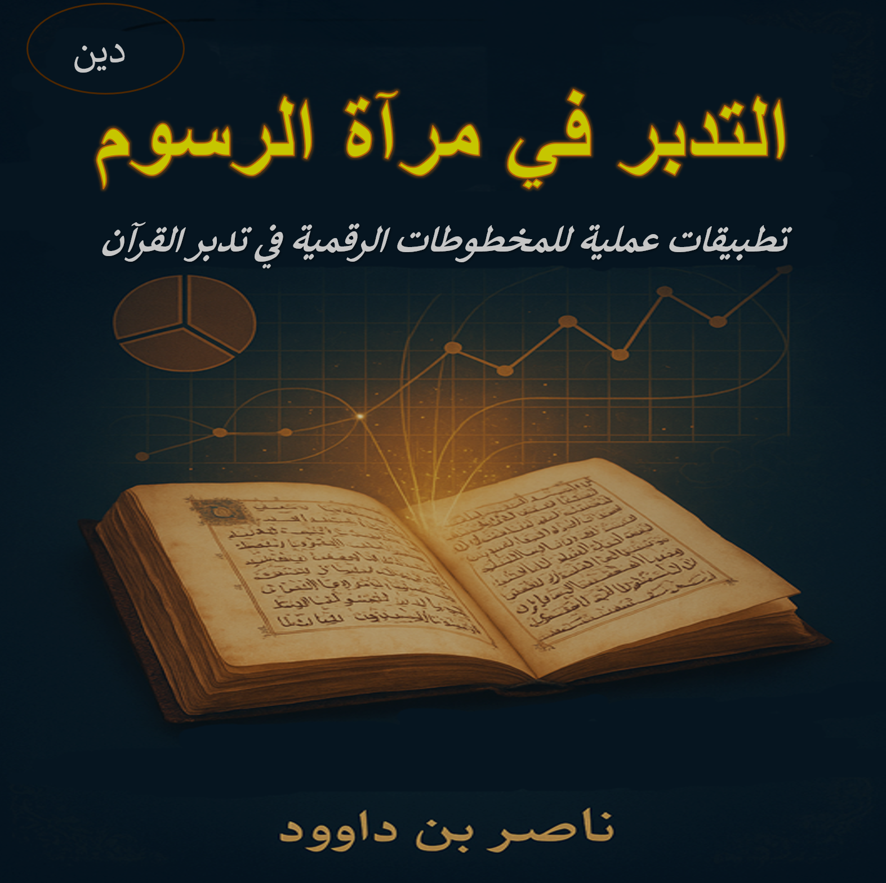

وصف الكتاب
يقدم هذا الكتاب منهجية جديدة لفهم القرآن الكريم من خلال دراسة المخطوطات القرآنية القديمة وتحليلها رقمياً، مع التركيز على دلالات الرسم العثماني وعلاقته بتدبر المعاني القرآنية.
يستند الكتاب إلى مفهوم "فقه السبع المثاني" كأساس لفهم البنية اللغوية العميقة للنص القرآني، مع تطبيقات عملية في عصر الرقمنة.
أبرز مميزات الكتاب:
- دمج بين الدراسات القرآنية التقليدية والتقنيات الرقمية الحديثة
- تحليل معمق للرسم العثماني ودلالاته
- منهجية "فقه السبع المثاني" كأداة لفهم القرآن
- أمثلة تطبيقية من المخطوطات القرآنية
- رؤية جديدة للتعامل مع القرآن في العصر الرقمي
فهرس المحتويات
هدف الكتاب
يهدف هذا العمل إلى تقديم منهجية متكاملة للتعامل مع القرآن الكريم في ضوء المخطوطات القديمة والتقنيات الحديثة، لإحياء علاقة الأمة بكتابها عبر فهم أعمق يستلهم التراث ويتجاوزه باستخدام أدوات العصر.